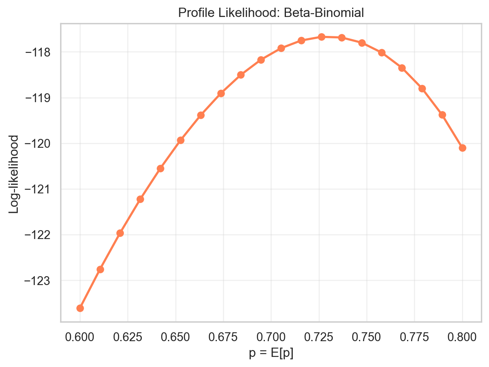

| item_id | user_id | rating | timestamp | model_attr | category | brand | year | |
|---|---|---|---|---|---|---|---|---|
| 3098 | 4501 | 392873 | 5.0 | 2015-02-02 | Female | Headphones | Apple | 2014 |
| 3860 | 3700 | 510134 | 5.0 | 2015-07-16 | Male | Headphones | Philips | 2014 |
| 2392 | 4501 | 298026 | 2.0 | 2014-08-31 | Female | Headphones | Apple | 2014 |
| 2678 | 4501 | 330293 | 4.0 | 2014-11-02 | Female | Headphones | Apple | 2014 |
| 3543 | 6699 | 465867 | 2.0 | 2015-05-14 | Female | Headphones | Jabra | 2015 |
Introduction
Product ratings are commonly used to assess brand quality, but summarizing ratings is challenging because user ratings reflect both product quality and individual user preferences. Some users are naturally generous raters while others are harsh. Traditional summary statistics like mean ratings ignore this heterogeneity. This article develops a hierarchical model that explicitly captures how individual user preferences vary, enabling estimation of the underlying distribution of rating propensity for a given brand.
Data
Electronics product rating dataset is used in the study. The dataset contains user ratings for various electronic products, with each rating on a scale from 1-5. For this article a subset of Headphones in the data, from brands Philips, Jabra and Apple is used. The study focuses on these 3 particular products from these brands to make a comparative assessment.
EDA
Average ratings for brands is close and it appears that there is some degree of variability in the ratings. This variability can hide true differences between brands.

The distribution of ratings for these brands has distinct patterns, while users seem to have more polar views on Jabra (commonly rate 1 or 5), Philips has a more favourable set of ratings with fewest 1 Stars.

At this point it is hard to say which brand is more favourably rated given the variability in average ratings.
Analysis
Modelling a single brand
It can be useful to start by modeling the ratings for a single brand to understand the underlying distribution and variability.
It is useful to consider that each user effectively has 5 discrete numbers which it gets to chose from with a certain underlying probability. This behaviour essentially mimicks a binomial process. If it is considered that individual user ratings are binomial outcomes then it implies that brand ratings are essentially a mixtue of binomials.
A binomial model assumes \(y \sim \text{Binomial}(n, p)\), where \(p\) is the probability of a favorable rating. The likelihood is \(L(p) = p^y(1-p)^{n-y}\), with MLE \(\hat{p} = y/n\).
Extending this line of thinking it is clear that the underlying binomial parameter (p) is the favourability of the given brand for users. Higher the p, more favourable the brand and expectedly it should have higher ratings.
So, effectively each user has a preference p and the observed ratings are realizations of a binomial process with this underlying probability.
To model a single user’s preference needs a hierarchical approach, where individual user preferences are drawn from a common distribution, capturing the variability across users. The end result is not just a single value of p for a user but rather a range of possible values with different likelihood based on how the user has rated the product.
For e.g. if a user who has rated the product 4 star is considered, then the likelihood of their preference p would be higher for values around 0.8 (assuming 4 out of 5 ratings are favorable), but it may still be possible that their preference is some other value with a lower likelihood.
For a refresher on likelihood theory refer likelihood primer

Heirarchical model
It is not unreasonable to assume that these preferences (p) for users are drawn from a distribution (say Beta). The marginal likelihood for a given user integrates over the uncertainty in \(p\):
\[L(y) = \int_0^1 L(y \mid p) \, f(p) \, dp = \int_0^1 p^y(1-p)^{n-y} f(p) \, dp\]
where \(f(p) = \text{Beta}(p \mid \alpha, \beta)\). This captures heterogeneity in user preferences while pooling information across observations.
A numerical approach is favoured here so that \(\alpha\) and \(\beta\) can be estimated from the data.
Maximum Likelihood Estimation
Beta-Binomial MLE:
α = 1.540765
β = 0.569612
Distribution of p ~ Beta(1.54, 0.57):
E[p] = 0.730090
SD[p] = 0.251705
95% range: [0.236749, 1.223431]
Interpretation: Users have a preference for Apple products with p varying around 73.0%
with standard deviation ±25.2%Profile likelihood of p
For Beta-Binomial, we fix E[p] and optimize α.
Profile likelihood MLE: p = 0.726316
Joint optimization MLE: p = 0.730090
Difference: 0.003774
The curve shows a well defined (regular) likelihood profile which peaks at around MLE value. This could also be used to derive confidence interval on p if required.